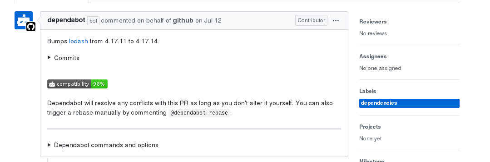
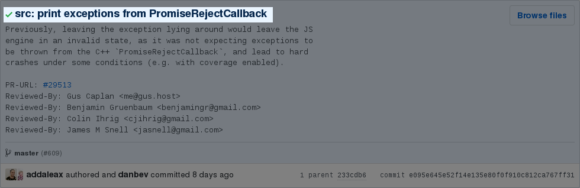
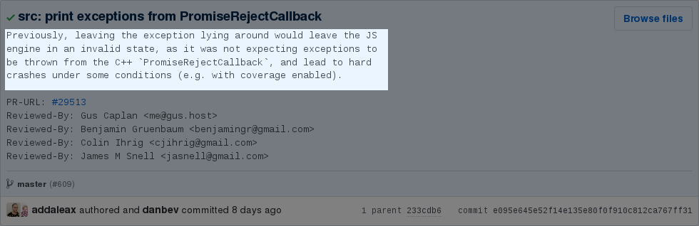
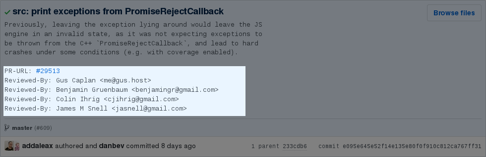

class: center, middle, inverse # Code Review - Practicas de ingenieria 1/N ## [Manuel Pineda - [pin3da](//pin3da.github.io)] --- # Agenda - ### Importancia y objetivos - ### Terminologia - ### Perspectiva del revisor - Que aspectos debo mirar? - Como navegar en los cambios. - Velocidad de un code review. - Como escribir buenos comentarios. - Como manejar las respuestas a los comentarios. - ### Perspectiva del autor - Pre requisitos - Commits pequenos. - Commentario descriptivo. - Como manejar los comentarios del revisor? --- # Importancia (Definicion del problema) ### **Entropia**: De acuerdo con la segunda ley de la termodinamica, en un sistema cerrado, la cantidad de desorden nunca decrece. La entropia es una medida de este desorden. ### **Entropia en el software**: Es un proceso de degradacion natural e inevitable en nuestro codigo, que debe ser atacado continuamente pues *nunca decrece*. ### **Por que ocurre?**: --- --- # Importancia ## **software entropy**: - ### "Not my problem" - ### Cambios en la logica de negocio - ### "Atajos"/"Hacks" para soluciones rapidas - ### Codigo no usado - ### Codigo duplicado - ### ... --- # Importancia - ### Mejora la calidad del codigo al saber que va a ser revisado por alguien mas. - ### Ayuda a reducir la cantidad de errores en el codigo en una etapa inicial. - ### Ayuda a compartir el conocimiento entre las personas del equipo: - Buenas Practicas - Estilo de codigo - Consistencia en las soluciones - ### Mejora la legibilidad del codigo. --- # Objetivos ### ✅ Mejorar la calidad del codigo con el tiempo, y evitar la degradacion. ### ✅ Compartir conocimiento y hacer mentoria a otros miembros del equipo. ### 🚫 Atrasar el trabajo de los demas miembros del equipo. ### 🚫 Desmotivar a las personas a contribuir. --- # Terminologia ## CL, commit, revision, patch, pull request: Conjunto de cambios que son enviados para evaluacion, generalmente resuelven *un problema* y contiene todo lo necesario para ser probado y ejecutado. ## Autor y revisor: -- Los robots tambien pueden ser autores!  --- # Perspectiva del revisor ## Que aspectos debo mirar? ### Diseno Esta es la parte mas importante de un code review, se debe pensar en: - es este cambio necesario? - es mantenible? - como interactuan cada uno de los componentes? - es momento para sugerir un refactoring mayor? - es posible usar un patron de diseno? --- # Perspectiva del revisor ## Que aspectos debo mirar? ### Funcionalidad - La implementacion realmente hace lo que el autor desea? - Corner cases. - Revisores experimentados para problemas que son dificiles de detectar al ejecutar el codigo, por ejemplo deadlocks y race conditions. --- # Perspectiva del revisor ## Que aspectos debo mirar? ### Complejidad Complejo en este caso significa: - *no se entiende facilmente al leer el codigo* - *nuevos bugs seran introducidos facilmente si alguien intenta modificar este codigo* -- - ❓ Es este cambio mas complejo de lo que deberia ser? - ❓ Las funciones son demasiado grandes? - ❓ La clase tiene muchas responsabilidades? *Lectura recomendada: https://martinfowler.com/bliki/CodeSmell.html* --- # Perspectiva del revisor ## Que aspectos debo mirar? ### Tests Dependiendo del caso, el commit debe contener pruebas unitarias, de integracion, o e2e. Si los tests estan malos, es muy probable que el resto del codigo tambien lo este. ❗ Normalmente no tenemos "test para los tests", debido a esto, el codigo debe ser extremadamente simple, a tal punto que no quede duda de su correctitud al leerlo (basicamente, nosotros somos los "tests para los tests"). --- # Perspectiva del revisor ## Que aspectos debo mirar? ### Recomendaciones para tests - No probar detalles de implementacion, estos cambian rapidamente. En cambio, probar comportamientos y *contratos* definidos en la API, si existen. - Usar mocks/inyecion de dependencias en las pruebas unitarias. - Evaular falsos positivos. Ejemplo, es posible pasar los test solo retornando un numero random? --- # Perspectiva del revisor ## Que aspectos debo mirar? ### Nombres *There are 2 hard problems in computer science: cache invalidation, naming things, and off-by-1 errors.* -- - estilo - signigicado - scope: -- - bloques - funciones - clases - API - servicios --- # Perspectiva del revisor ## Que aspectos debo mirar? ### Commentarios Los comentarios deben explicar el "por-que" del codigo, mas no el "como". Si el codigo requiere muchos comentarios, entonces deberia escribirse de otra manera mas simple. No se debe confundir comentarios con documentacion. Todas las interfaces y metodos publicos deben contener informacion acerca como y cuando usarse. La documentacion no debe revelar detalles de implementacion. --- # Perspectiva del revisor ## Que aspectos debo mirar? ### Estilo Es importante mantener el mismo estilo de codificacion en todo el equipo, para esto se debe definir un conjunto de "guidelines" que describen como debe ser escrito el codigo. Los cambios y mejoras mas alla de la guia de estilo deben ser opcionales y no bloquear la revision. Es importante recordar que esto es una medida subjetiva y que todos tenemos un punto de vista diferente con respecto a como luce el codigo. Guia de estilo recomendada http://google.github.io/styleguide/ --- # Perspectiva del revisor ## Que aspectos debo mirar? ### Contexto Algunas veces los commits cambian pocas lineas y parece un cambio "limpio", pero cuando miramos el contexto al rededor, podemos descubrir que es una logica que se repite en otras partes y puede ser evitada. Los commits que degraden la calidad del codigo no deben ser aceptados. A menos de que sea una emergencia, todos los commits deben llevar a una mejora. Como convertir un sistema simple en algo muy complejo? Una linea a la vez. --- # Perspectiva del revisor ## Que aspectos debo mirar? ### Que se hizo bien. Es muy importante reconocer el buen trabajo de los demas, principalmente de aquellos que estan comenzando. Invierte tiempo en resaltar lo bueno y no solo lo malo de cada commit. --- # Perspectiva del revisor ## Como navegar en los cambios. Paso 1: Obtener una vision general del cambio, entender la descripcion del commit. Paso 2: Identificar y evaluar las partes principales del commit. Si el commit es muy grande, se puede pedir al autor dividirlo en cambios mas pequenos. Otra opcion es preguntar al autor que partes del codigo son mas importantes a ser revisadas. Paso 3: Revisar el resto del codigo de manera apropiada. Si es necesario, esta etapa se puede realizar en varias sesiones, utilizando herramientas para marcar algunos archivos como revisados. -- Si no estas seguro de hacer una buena revision al commit, busca otra persona con mas experiencia que pueda ayudar en la revision. --- # Perspectiva del revisor ## Velocidad de un code review. - ### Cross-Time-Zone Reviews - ### LGTM con comentarios - ### No comprometer calidad en la revision vs velocidad de la misma. - ### Emergencias (no debe ser la regla general). Asegurate de dar seguimiento para mejorar el codigo despues de que pase la tormenta. --- # Perspectiva del revisor ## Como escribir buenos comentarios. - ### Se amable. - ### Explica tus ideas. - ### No es bueno dar todas las soluciones al equipo, en vez de eso, explica el problema y permite al autor encontrar la solucion por si mismo. --- # Perspectiva del revisor ## Como escribir buenos comentarios. - ### Sugiere al autor a cambiar el codigo, en vez de explicar con palabras las partes complejas del cambio. (Las explicaciones durante la revision, generalmente no son utiles para los desarrolladores que ven el codigo en el futuro). - ### Comparte el conocimiento. - ### Usa links de referencia en vez de tus propias explicaciones, de esta manera el autor puede seguir compartiendo los links cuando sea revisor. --- # Perspectiva del revisor ## Resumen Asegurate de revisar cada linea de codigo, garantizando que el cambio mejore la calidad del codigo, y reconocer el buen trabajo de los demas. --- # Perspectiva del autor ## Pre requisitos - ### Compila? -- - ### Pasa los tests? -- - ### Nuevos tests se agregaron? -- - ### El codigo es facil de leer? -- - ### La descripcion refleja los cambios que estoy haciendo? --- # Perspectiva del autor ## Commits pequenos o muy grandes. Elegir el tamano adecuado para el commit es dificil, pero muy importante. Asegurate de que cada cambio sea auto contenido y de no mezclar responsablidades en el mismo commit. Usa herramientas para esto: mercurial: ``` hg split hg fold ``` ``` git squash git reset + add + commit + add + commit de nuevo. ``` -- [git rebase](https://git-scm.com/docs/git-rebase#Documentation/git-rebase.txt---interactive) ``` git squash git rebase -i ``` --- # Perspectiva del autor - Comentario ## Como luce un buen commentario --- # Perspectiva del autor - Comentario ## Descripcion  --- # Perspectiva del autor - Comentario ## Descripcion ### Resumen corto de que cambio se hizo, debe ser una oracion completa, seguida de una linea en blanco. ### Generalmente la descripcion comienza por un verbo imperativo, "Add", "Delete", "Refactor". --- # Perspectiva del autor - Comentario ## Contexto  --- # Perspectiva del autor - Comentario ## Contexto ### Da una descripcion del problema a ser solucionado, incluye una explicacion de la solucion utilizada y las alternativas consideradas. ### Sirve para resaltar las partes importantes que deben ser revisadas con mayor atencion. --- # Perspectiva del autor - Comentario ## Metadata  --- # Perspectiva del autor - Comentario ## Metadata ### Sirve para describir como se probo el codigo, quienes fueron los revisores, que partes del sistema son afectadas, etc. -- ### 🤖 Parte mas amada por los robots. 🤖 --- # Perspectiva del autor - Comentario ## Comentarios del revisor: -- ### Aplica los cambios sugeridos, es una gran manera de aprender. -- ### No lo tomes personal. -- ### Nunca respondas si estas enojado. -- ### Si los comentarios no ayudan a mejorar el commit, intenta contactar al revisor personalmente y pregunta cuales eran sus intereses. -- ### Escala a un ingeniero mas senior si es necesario. --- # Revisor y autor ## Como manejar las respuestas a los comentarios. - Quien tiene la razon? - Asegurate de entender la perspectiva de la otra persona. - Mejorar la calidad del codigo generalmente se da en pasos pequenos. - Enfocate en los hechos de una manera tecnica, no personal. - Usa la guida de estilos, y links de referencia. -- - Desarrolladores molestos: - "Este es el codigo mas feo que he visto en toda mi vida"[1]. - Normalmente dura poco tiempo, es mejor esperar y responder despues. - Usa un lenguaje adecuado. -- - "Lo voy a mejorar en un commit posterior" <- Nunca pasa. 1. Caso de la vida real. --- # Trabajo futuro - ### Patrones de diseno - ### TDD - ### Refactoring - ### Arquitectura --- # Gracias!